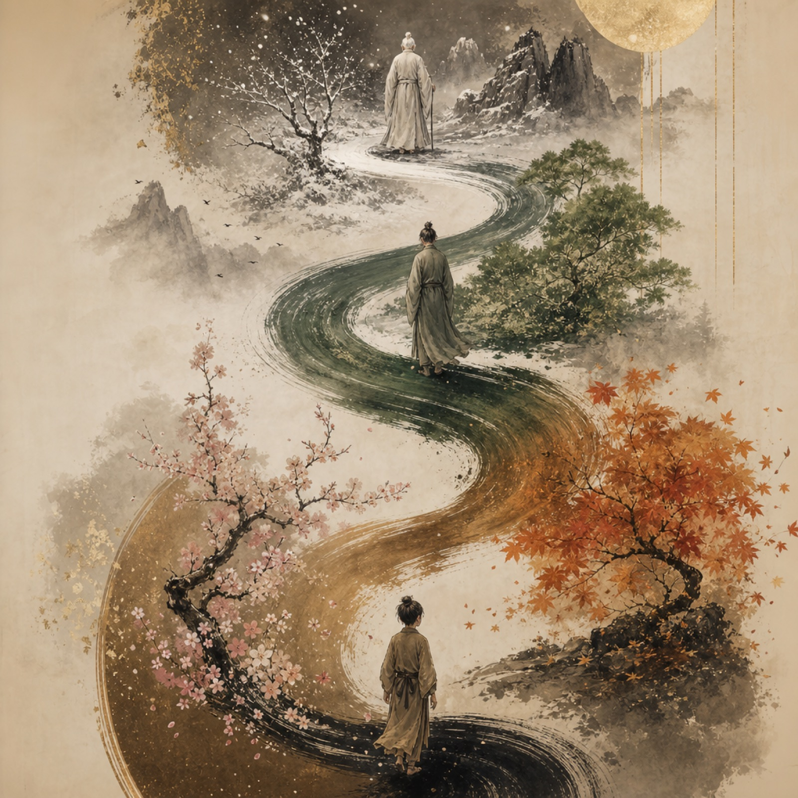
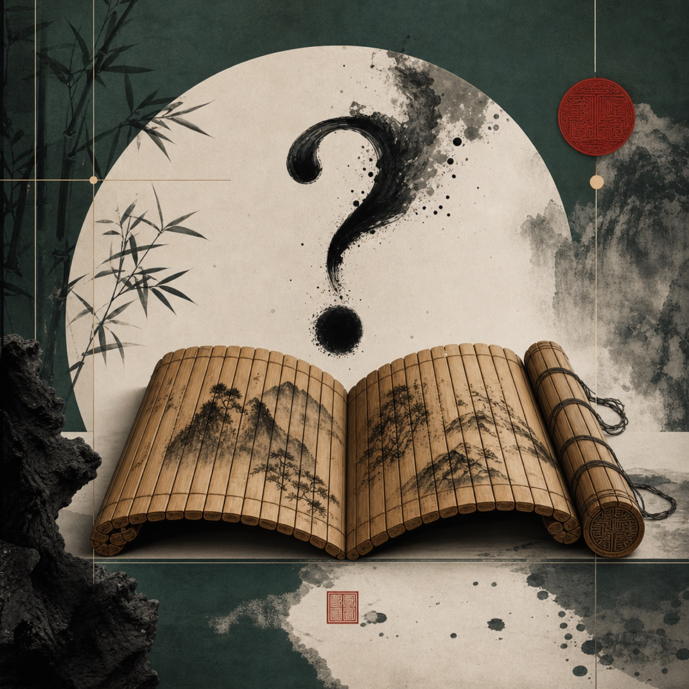

同一部《论语》，四种走进孔子的方式。先比较风格与内容形式，再点选你最想上的那一门。
每一种节奏不同：有人喜欢跟着孔子走路，有人喜欢对着人生难题找答案。点选最对味的那一种；想看细纲，再点「查看完整介绍」。
三十天，和孔子一起周游列国。每天一个场景：被当背景板、绝粮、遇隐士……原文从故事里长出来，旁边还有刺人的互动问题。

跟随孔子从少年到暮年。所有原文不是教条，而是他一生不同阶段的「处境 + 困境 + 选择 + 心境沉淀」。

《论语》20 讲：你遇到的人生难题，孔子都回答过。从修身到处世，从带团队到问天命——一问一答，直接可用。
跟着孔子，建设人生四大作品。从吃饭、情绪、事业，到夫妻、孝顺、教子——把经典落进日常具体事。
比较完四种课程后，请用微信扫一扫下方二维码，投下你那一票。
微信扫一扫 · 选择你最喜欢的一种风格与内容形式
你已选定风格。请再用微信扫下方二维码，正式投下这一票。